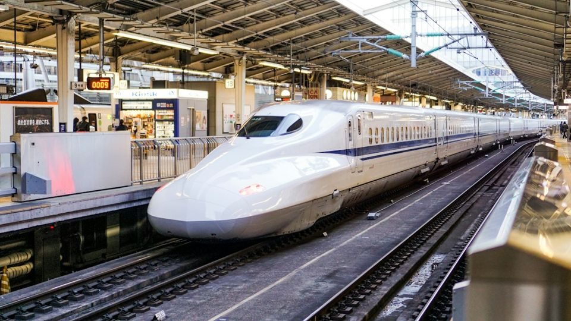
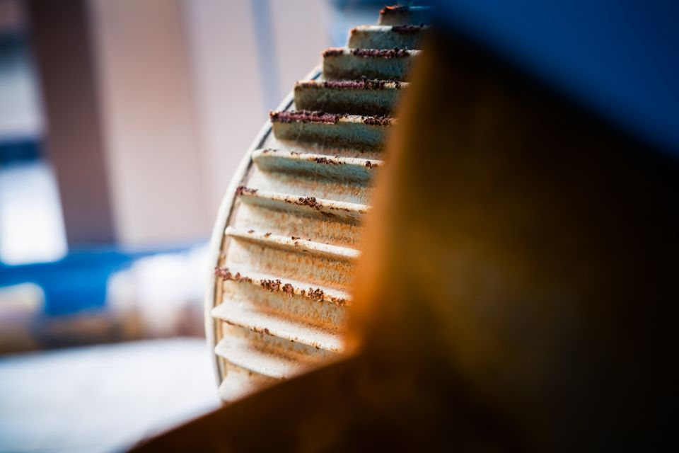
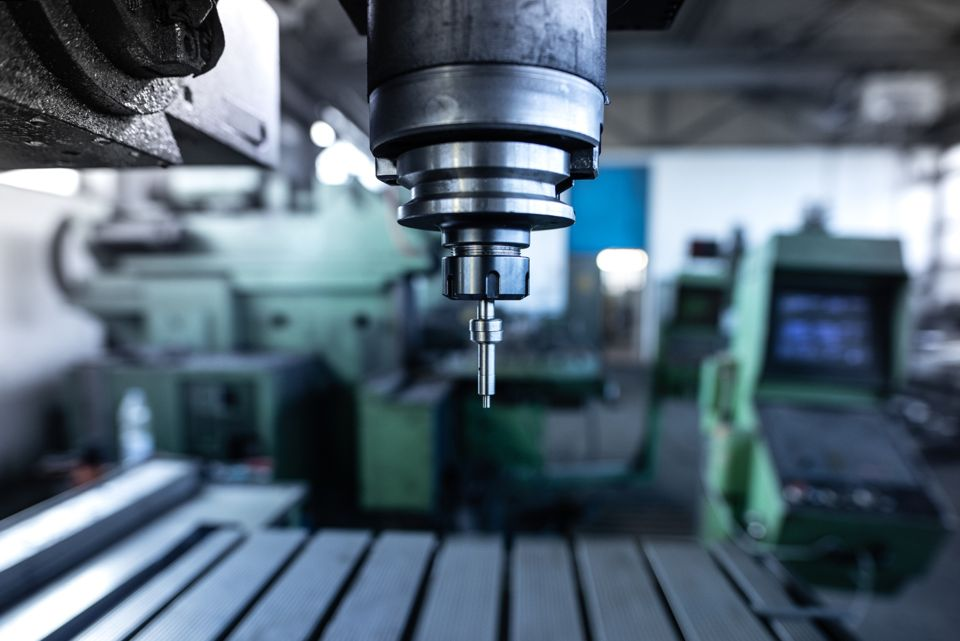
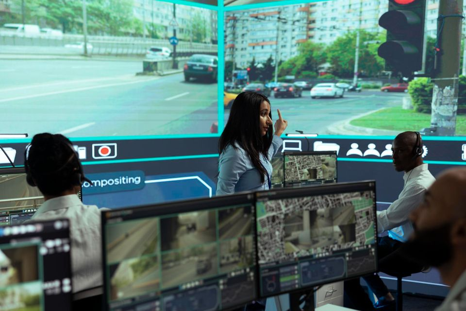

Operational data shared. Boundaries preserved.
Real deployments across industry, infrastructure and security.

Securing Railways' OT-IT Convergence with Terafence Data Diodes
How one of the world's largest railway networks streams real-time data from nine OT systems to IT, with hardware-enforced protection against inbound attacks
Read case study
Power Plant Emissions Reporting to the Regulator
How a power plant delivers continuous, real-time emissions data to the Ministry of Environmental Protection without exposing its OT network
Read case study
Petrochemical Gas Flare Live Monitoring
How an oil refinery meets a 24/7 regulatory video requirement while keeping its plant network sealed from cyber threats
Read case study
Engine/Turbine Secure Data Telemetry via Modbus
How a leading chemical manufacturer gave its equipment vendor real-time analytics without exposing its OT network to the internet
Read case study
A Global Machinery Manufacturer: Secure Remote Maintenance Built into the Machine
How an industrial machinery OEM ships smart machines with Terafence inside, enabling predictive maintenance without opening customers' production networks
Read case studySecure Advanced Data Telemetry via SMTP
How a critical infrastructure site sends water treatment data to a global water company's analytics platform in the cloud with one-way, hardware-enforced security
Read case studyWater Facility Secure Syslog Data Telemetry to SOC
How a regional water association meets national SOC reporting rules with air-gap security, low cost and zero disruption
Read case study
Defense Sites: Segmenting the Building Management System
How defense facilities use Terafence to give operators full visibility of building controls while sealing the BMS network off from the rest of the site
Read case study
Securing the CCTV Network of a Military Air Base in Japan
Terafence USG isolates flight-line, perimeter and entry-control cameras from the base network without losing a frame of video
Read case studyA Managed Security Provider: Feeding a Cloud SOC Safely
How a managed security provider streams device telemetry from protected customer sites to its cloud SOC, with no route back into those sites
Read case studyTell us where your boundary sits
Say what has to cross it. We will help you choose the right device and plan a pilot.